The transfer function of a notch filter is,
.
Substitute  for , 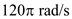 for
for , 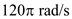 for  , and 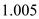 for
, and 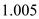 for  in the equation.
in the equation.
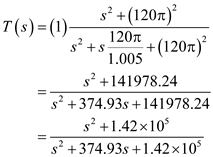
Thus, the transfer function of the notch filter is, 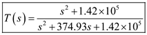.
The quality factor of a second order notch filter with notch frequency, is,
.
The interference frequency is, 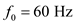.
The DC gain is, 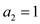.
The attenuation is, 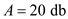.
The Band width is,
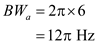.
The interference frequency is,
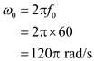
The quality factor is,
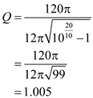
The transfer function of a notch filter is,
.
Substitute for , 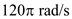 for , and 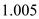 for in the equation.
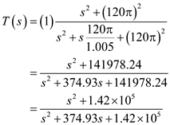
Thus, the transfer function of the notch filter is, 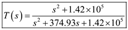.